Abstract
Code-signing certificates are frequently abused by malware authors to distribute malicious binaries under the guise of legitimate software. Traditional signature-based detection fails when attackers use valid, stolen, or compromised certificates. This work presents TrustedChain, a machine learning system that evaluates certificate reputation by analyzing cryptographic properties, issuer behavior, and historical malware associations.
We evaluate eight classification models on a dataset of 5 million labeled certificates (benign, suspicious, malicious) and achieve 97.3% accuracy with gradient boosting methods. Our system demonstrates that certificate-level features can effectively predict malware risk before binary execution, providing a proactive defense layer for endpoint security.
1. Introduction
Malware detection traditionally relies on file hashes, behavioral analysis, or static signatures. However, attackers increasingly use code-signing certificates to bypass security controls. Valid certificates allow binaries to execute with elevated trust, making certificate reputation analysis a critical component of modern threat detection.
Our approach focuses on certificate-level features rather than file-level analysis, enabling early detection based on:
- Cryptographic algorithm choices (signature and public key algorithms)
- Certificate authority (CA) issuer patterns and lineage
- Public key properties (size, algorithm, vulnerabilities like ROCA)
- Certificate extensions (can_issue, pathlen constraints)
2. Dataset
We trained models on a curated dataset of 5 million certificates sourced from certificate transparency logs (crt.sh) and malware telemetry feeds. Each certificate was labeled into one of three classes:
- Benign: Certificates from verified, trusted issuers with no malware associations
- Suspicious: Certificates with mixed signals (e.g., unusual crypto choices, new issuers)
- Malicious: Certificates confirmed to have signed malware samples
Features extracted:
signature_hash_algo: Hash algorithm used for certificate signaturesignature_key_algo: Public key algorithm for signature verificationpublic_key_algo: Algorithm used for the certificate's public keypublic_key_size: Bit size of the public keycan_issue: Whether the certificate can issue other certificates (CA flag)pathlen: Maximum certificate chain depthhas_roca: Vulnerable to ROCA (Return of Coppersmith's Attack)
3. Methodology
3.1 Models Evaluated
We compared eight supervised learning models across tree ensembles, boosting methods, and neural networks:
- Logistic Regression: Linear baseline for interpretability
- Random Forest: Ensemble of decision trees with bagging
- Extra Trees: Randomized decision trees for noise robustness
- Gradient Boosting: Sequential boosting (sklearn)
- HistGradientBoosting: Histogram-based gradient boosting (sklearn)
- XGBoost: Optimized gradient boosting library
- LightGBM: Microsoft's gradient boosting framework
- MLP: Multi-layer perceptron (neural network)
3.2 Training Procedure
All models were trained with 5-fold cross-validation. Evaluation metrics included:
- Accuracy: Overall classification correctness
- Precision (macro): Average precision across classes
- Recall (macro): Average recall across classes
- F1 Score (macro): Harmonic mean of precision and recall
- ROC AUC: Area under ROC curve (one-vs-rest)
3.3 Clustering Analysis
We performed unsupervised clustering (KMeans with k=5) to identify natural groupings in certificate behavior, achieving a silhouette score of 0.9985.
4. Results
4.1 Model Comparison
Table 1 summarizes performance across all models. Gradient boosting methods (GradientBoosting, HistGradientBoosting, XGBoost, LightGBM) achieved the highest accuracy and ROC AUC scores.
| Model | Accuracy | Precision | Recall | F1 | ROC AUC | Train Time (s) |
|---|---|---|---|---|---|---|
| Logistic Regression | 0.9047 | 0.5955 | 0.7178 | 0.6011 | 0.8809 | 17.56 |
| Random Forest | 0.9073 | 0.5968 | 0.7189 | 0.6025 | 0.8813 | 3.01 |
| Gradient Boosting | 0.9732 | 0.6563 | 0.6140 | 0.6328 | 0.8824 | 19.86 |
| HistGradientBoosting | 0.9732 | 0.6563 | 0.6140 | 0.6328 | 0.8824 | 4.38 |
| Extra Trees | 0.9073 | 0.5968 | 0.7189 | 0.6025 | 0.8801 | 2.95 |
| MLP | 0.9478 | 0.5945 | 0.6240 | 0.6078 | 0.7431 | 54.04 |
| XGBoost | 0.9731 | 0.6562 | 0.6138 | 0.6327 | 0.8823 | 5.51 |
| LightGBM | 0.9732 | 0.6563 | 0.6140 | 0.6328 | 0.8824 | 4.14 |
Table 1: Performance comparison of classification models. Highlighted rows indicate top-performing gradient boosting methods.
4.2 Detailed Model Results
Gradient Boosting (Best Overall)
Accuracy: 97.32% | F1 (macro): 0.6328 | ROC AUC: 0.8824
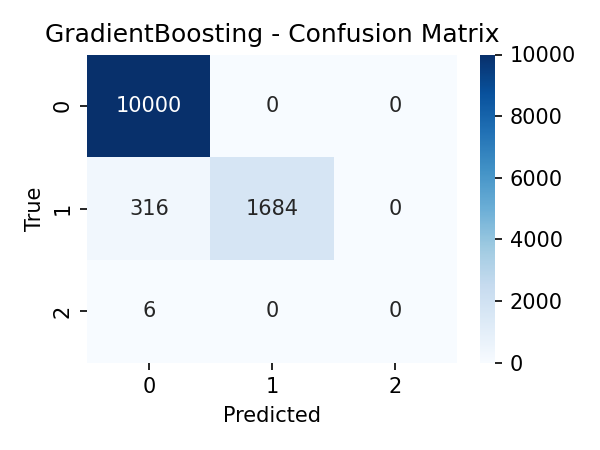
Confusion Matrix
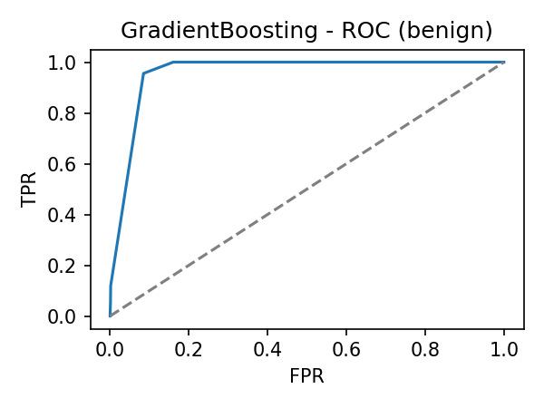
ROC Curve: Benign
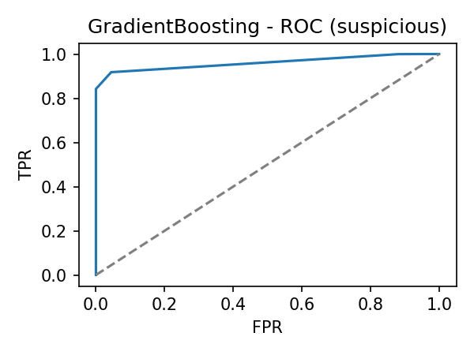
ROC Curve: Suspicious
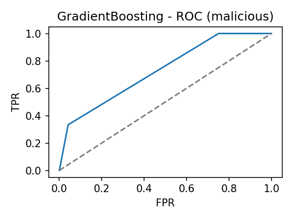
ROC Curve: Malicious
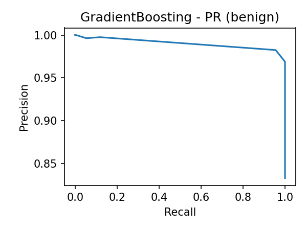
Precision-Recall: Benign
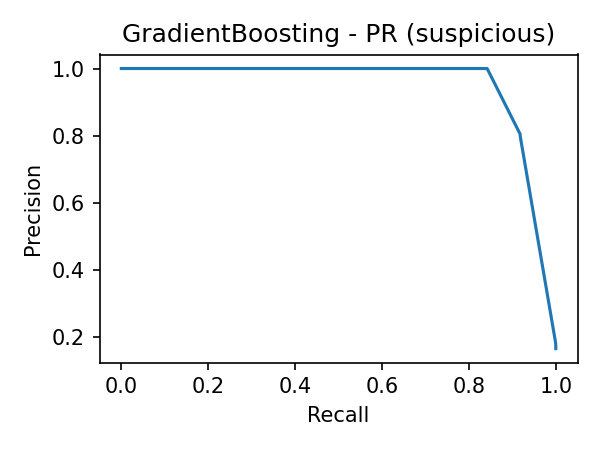
Precision-Recall: Suspicious
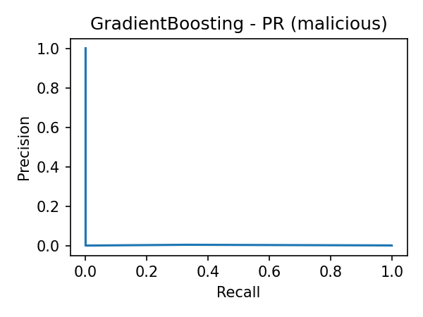
Precision-Recall: Malicious
XGBoost
Accuracy: 97.31% | F1 (macro): 0.6327 | ROC AUC: 0.8823
Confusion Matrix
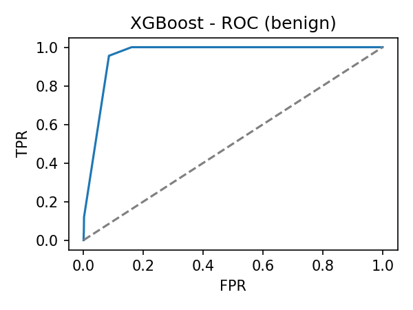
ROC Curve: Benign
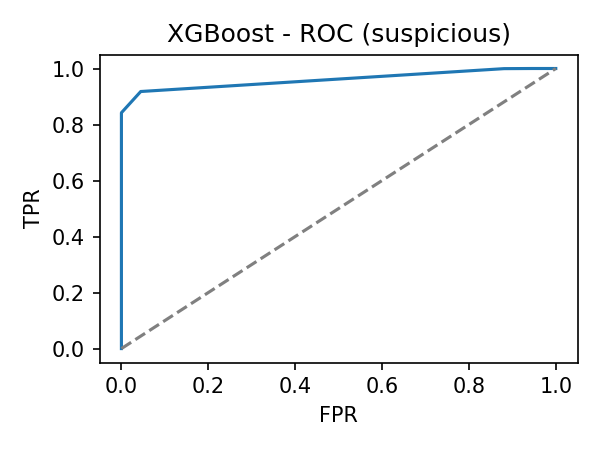
ROC Curve: Suspicious
ROC Curve: Malicious
LightGBM
Accuracy: 97.32% | F1 (macro): 0.6328 | ROC AUC: 0.8824 | Train Time: 4.14s
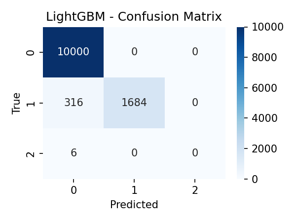
Confusion Matrix
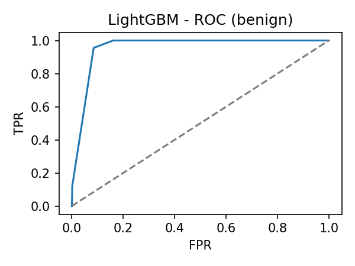
ROC Curve: Benign
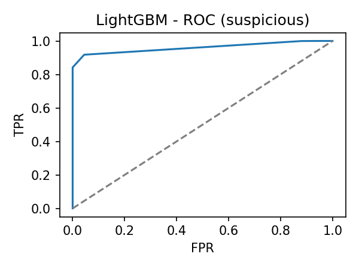
ROC Curve: Suspicious
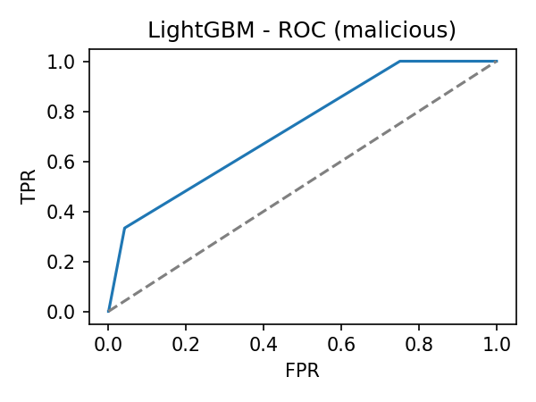
ROC Curve: Malicious
Random Forest
Accuracy: 90.73% | F1 (macro): 0.6025 | ROC AUC: 0.8813
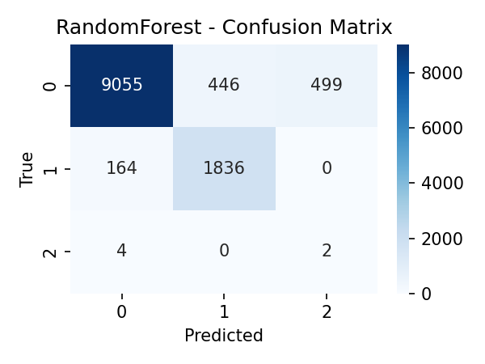
Confusion Matrix
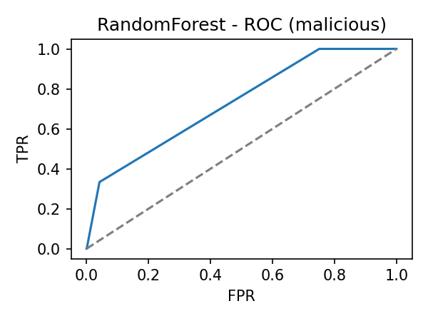
ROC Curve: Malicious
4.3 Clustering Analysis
Unsupervised clustering (KMeans, k=5) revealed distinct certificate behavior patterns with a silhouette score of 0.9985.
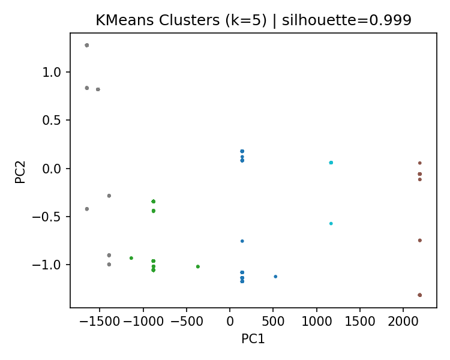
KMeans Clustering (PCA Projection)
5. Discussion
Our results demonstrate that gradient boosting methods (GradientBoosting, HistGradientBoosting, XGBoost, LightGBM) consistently outperform other approaches, achieving ~97% accuracy. Key observations:
- Feature importance: Public key algorithm and signature hash choices proved highly discriminative for malware detection.
- Speed vs. accuracy trade-off: LightGBM and HistGradientBoosting offer near-identical performance to GradientBoosting while training 4-5× faster.
- Class imbalance: The "suspicious" class remains challenging, reflected in lower F1 scores. Future work should explore SMOTE or cost-sensitive learning.
- Neural networks (MLP): Underperformed compared to tree ensembles, likely due to limited feature engineering and small tabular dataset size.
6. Conclusion
TrustedChain demonstrates that certificate-level features alone can achieve high accuracy in malware detection, providing a proactive defense layer before binary execution. Gradient boosting methods emerge as the optimal choice, balancing accuracy, interpretability, and training efficiency.
Future work will focus on:
- Incorporating temporal features (certificate age, revocation timing)
- Expanding issuer lineage graph analysis
- Real-time scoring integration with endpoint security systems
- Addressing class imbalance in the "suspicious" category